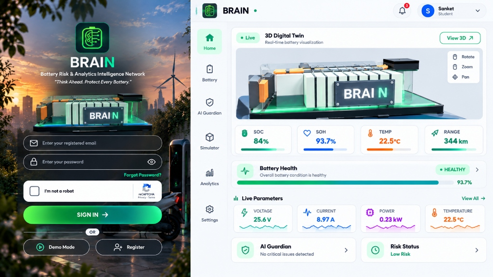
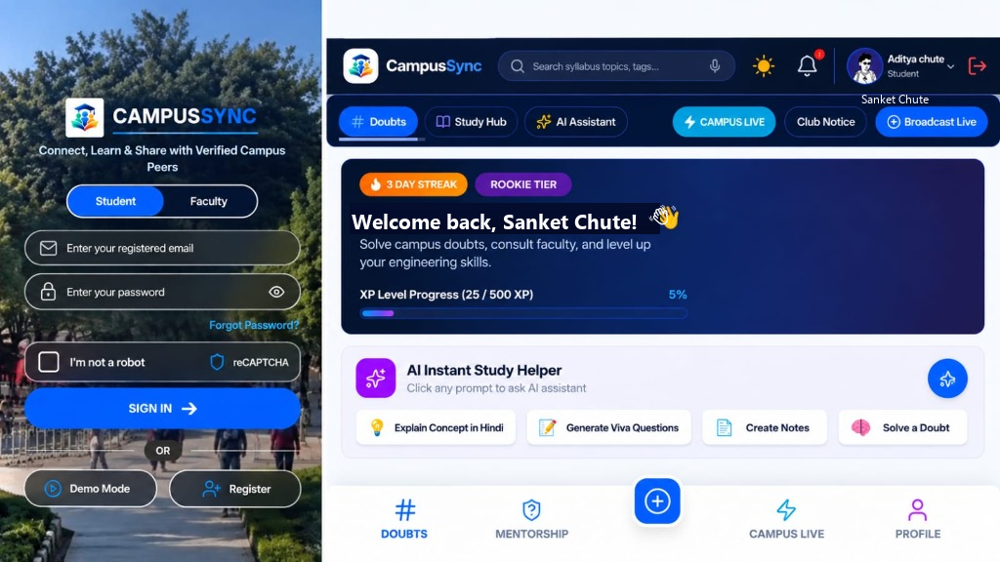
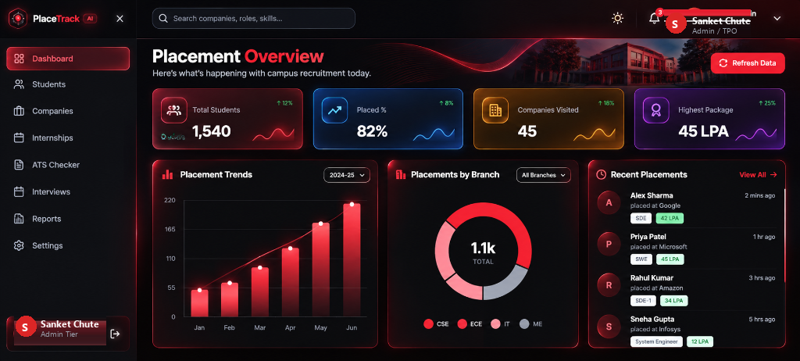

Sanket Chute — Full Portfolio Developer Preview
Interactive QA rendering preview for all 8 Cinematic SVG assets & GitHub Stats Integration
Status: 100% Portfolio Integrated & Validated


🚀 Featured Engineering Projects
|
 ⚡ BRAIN — Battery AnalyticsPINN AI • BLE GATTCyber-physical digital twin forecasting SOH % and thermal runaway via Physics-Informed Neural Networks.
Stack: React 18, Three.js, PINN, Web BLE, Tailwind Demo ↗ Repo ↗ |
 🧠 CampusSync / PeerSpaceGroq Llama 70B • FirebaseDistributed academic intelligence platform with Groq Llama 3.3 70B cognitive tutor and anonymous discourse.
Stack: React 18, Vite, Groq AI, Firebase, Vercel Demo ↗ Repo ↗ |
 🎯 PlaceTrack AISupabase • JWT RBACEnterprise placement orchestration system with heuristic ATS resume scoring and multi-tenant authorization.
Stack: React.js, Node.js, Supabase Postgres, JWT Demo ↗ Repo ↗ |
💼 Industry Engineering Internships (Separate Dossier)
🤖 CodeAlphaML & Deep Learning Intern
Stack: Python 3, TensorFlow, Scikit-Learn, OpenCV, Streamlit Repo ↗ |
⚡ CodSoftAI Engineering Intern
Stack: Transformers, Minimax, CV, Gradio, Python 3 Repo ↗ |
🐍 Brillect Tech SolutionsPython Software Intern
Stack: Python 3, OOP Architecture, File I/O, Data Structures ✓ Official Industry Verified |